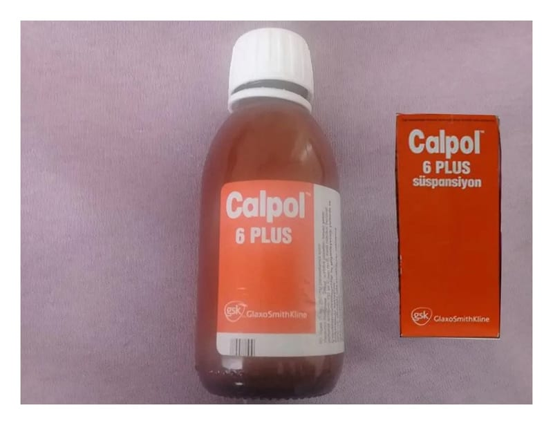

Calpol 6 Plus 250 mg / 5 ml Oral Süspansiyon, 150 ml

Ne için kullanılır
KT · Bölüm 1CALPOL 6 PLUS, süspansiyon (çözelti, katı-sıvı karışımı) şeklinde her bir ölçeğinde (her 5 ml’de) 250 mg parasetamol içeren, ağrı kesici ve ateş düşürücü olarak etki gösteren bir ilaçtır.
CALPOL 6 PLUS 150 ml oral süspansiyon, çocuk emniyetli kapak içeren kahverengi şişede, 5 ml ölçekli kaşık ile birlikte sunulmaktadır.
CALPOL 6 PLUS, hafif ve orta şiddetli ağrılar ile ateşin semptomatik (hastalığı tedavi edici değil, belirtilerini giderici) tedavisinde kullanılır.